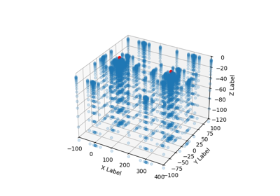

gempy.core.data.Grid¶
-
class
gempy.core.data.Grid(**kwargs)[source]¶ Class to generate grids.
This class is used to create points where to evaluate the geological model. This class serves a container which transmit the XYZ coordinates to the interpolator. There are several type of grids objects will feed into the Grid class
- Parameters
**kwargs – See below
- Keyword Arguments
regular (
gempy.core.grid_modules.grid_types.RegularGrid) – [s0] Class with the methods and properties to manage 3D regular grids where the model will be interpolated.custom (
gempy.core.grid_modules.grid_types.CustomGrid) – [s1] Object that contains arbitrary XYZ coordinates.topography (
gempy.core.grid_modules.grid_types.Topography) – [s2]sections (
gempy.core.grid_modules.grid_types.Sections) – [s3]gravity (
gempy.core.grid_modules.grid_types.Gravity) –
-
values¶ coordinates where the model is going to be evaluated. This are the coordinates concatenation of all active grids.
- Type
np.ndarray
-
values_r¶ rescaled coordinates where the model is going to be evaluated
- Type
np.ndarray
-
length¶ I a array which contain the slicing index for each grid type in order. The first element will be 0, the second the length of the regular grid; the third custom and so on. This can be used to slice the solutions correspondent to each of the grids
- Type
np.ndarray
-
active_grids¶ boolean array which control which type of grid is going to be computed and hence on the property values.
- Type
np.ndarray[bool]
-
regular_grid¶
-
custom_grid¶
-
topography¶ - Type
gempy.core.grid_modules.grid_types.Topography
-
sections¶
-
gravity_grid¶ - Type
gempy.core.grid_modules.grid_types.Gravity
Examples using Grid
Methods
__init__(**kwargs)Initialize self.
create_centered_grid(centers, radius[, …])Initialize gravity grid.
create_custom_grid(custom_grid)Set a new regular grid and activate it.
create_regular_grid([extent, resolution, …])Set a new regular grid and activate it.
create_section_grid(section_dict)Object that creates a grid of cross sections between two points.
create_topography([source])Create a topography grid and activate it.
Deactivates the active grids array :return:
get_grid(grid_name)get_grid_args(grid_name)get_section_args(section_name)set_active(grid_name)Set active a given or several grids :param grid_name: :type grid_name: str, list
set_inactive(grid_name)Copy XYZ coordinates from each specific grid to Grid.values for those which are active.
-
create_regular_grid(extent=None, resolution=None, set_active=True, *args, **kwargs)[source]¶ Set a new regular grid and activate it.
- Parameters
extent (np.ndarray) – [x_min, x_max, y_min, y_max, z_min, z_max]
resolution (np.ndarray) – [nx, ny, nz]
- RegularGrid Docs
(inserted)
Class with the methods and properties to manage 3D regular grids where the model will be interpolated.
Args:
extent (np.ndarray): [x_min, x_max, y_min, y_max, z_min, z_max]
resolution (np.ndarray): [nx, ny, nz]
Attributes:
extent (np.ndarray): [x_min, x_max, y_min, y_max, z_min, z_max]
resolution (np.ndarray): [nx, ny, nz]
values (np.ndarray): XYZ coordinates
mask_topo (np.ndarray, dtype=bool): same shape as values. Values above the topography are False
dx (float): size of the cells on x
dy (float): size of the cells on y
dz (float): size of the cells on z
-
create_custom_grid(custom_grid: numpy.ndarray)[source]¶ Set a new regular grid and activate it.
- Parameters
custom_grid (np.array) – [s0] (numpy.ndarray[float, 3]): XYZ 2D array. Axis 1 is the coordinates while axis 0 is n number of input
-
create_topography(source='random', **kwargs)[source]¶ Create a topography grid and activate it.
- Parameters
source –
‘gdal’: Load topography from a raster file.
’random’: Generate random topography (based on a fractal grid).
’saved’: Load topography that was saved with the topography.save() function. This is useful after loading and saving a heavy raster file with gdal once or after saving a random topography with the save() function. This .npy file can then be set as topography.
- Keyword Arguments
= 'gdal' (source) –
filepath: path to raster file, e.g. ‘.tif’, (for all file formats see https://gdal.org/drivers/raster/index.html)
= 'random' (source) –
fd: fractal dimension, defaults to 2.0
d_z: maximum height difference. If none, last 20% of the model in z direction
extent: extent in xy direction. If none, geo_model.grid.extent
resolution: desired resolution of the topography array. If none, geo_model.grid.resoution
= 'saved' (source) –
filepath: path to the .npy file that was created using the topography.save() function
- Returns
class:gempy.core.data.Topography
-
create_section_grid(section_dict)[source]¶ Object that creates a grid of cross sections between two points.
- Parameters
regular_grid – Model.grid.regular_grid
section_dict – {‘section name’: ([p1_x, p1_y], [p2_x, p2_y], [xyres, zres])}
-
create_centered_grid(centers, radius, resolution=None)[source]¶ Initialize gravity grid. Deactivate the rest of the grids (inserted)
Main method of the class, set the XYZ values around centers using a kernel.
- Parameters
centers (np.array) – XYZ array with the centers of where we want to create a grid around
kernel_centers (Optional[np.array]) – center of the voxels of a desired kernel.
**kwargs –
resolution: [s0] (numpy.ndarray[int]): [nx, ny, nz
radius (float): Maximum distance of the kernel
Returns:
-
set_active(grid_name: Union[str, numpy.ndarray])[source]¶ Set active a given or several grids :param grid_name: :type grid_name: str, list